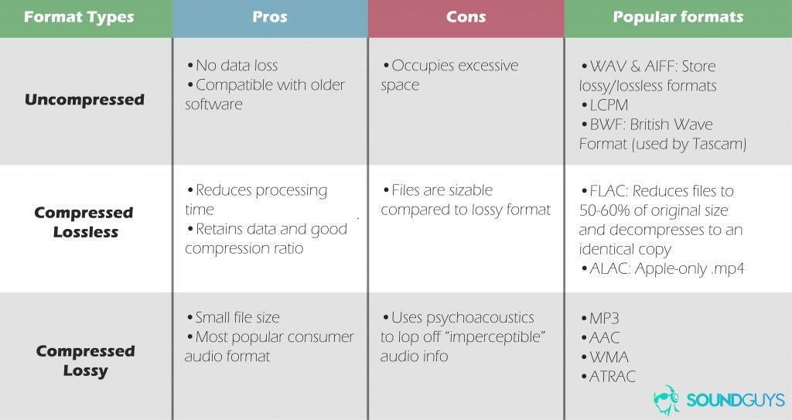
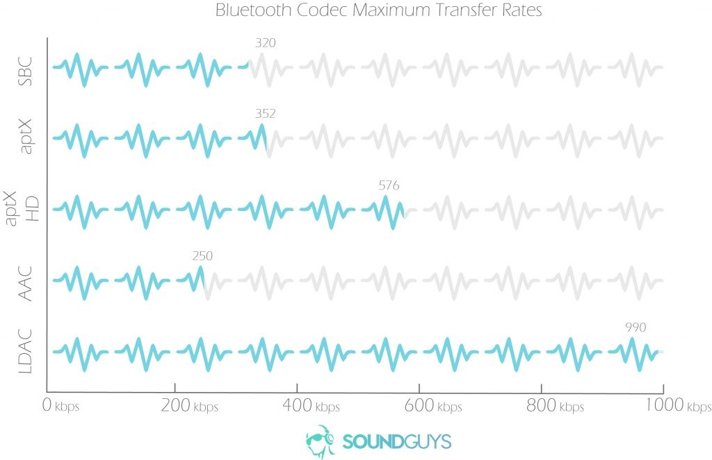

Bluetooth Audio
Table of Contents
1 Bluetooth Codecs
1.1 Basic terms
- Sample rate (Hz)
the number of points of data per second in an audio file. You need two samples to accurately capture any frequency, so audio is sampled at least twice the limits of human hearing (approximately 20 kHz). Higher resolution file formats tend to be exported at 96 kHz or greater. A greater sample rate means a greater file size.
- Bit-depth (-bit)
the number of bits saved for each audio sample. A higher bit depth records a signal more accurately. CD quality is 16-bits, but high resolution files extend this to 24-bits. A greater bit depth multiplies the file size.
- Bit-rate (kbps)
usually measured in kbps or mbps. This is the amount of audio data transferred per second over Bluetooth. For uncompressed files, this is calculated by multiplying the sample rate by the bit-depth.
1.2 Audio Type
There are three main types of audio compression formats, uncompressed, lossless, and lossy.

1.3 Codecs
High-quality audio is streamed more efficiently over codecs like aptX and LDAC than the popular, yet limited, SBC and AAC codecs.
Google O release has support for new codecs like Aptx , Aptx-HD, AAC and LDAC.
In terms of software, a codec determines how Bluetooth is transmitted from the source to your headphones. It encodes and decodes digital audio data into a specific format. Ideally, it transmits a high-fidelity signal at the minimum specified bit-rate. This results in the least amount of space and bandwidth required for storage and playback, respectively. A lower bitrate means better compression and worse sound quality, a high bitrate means better sound quality and worse compression.

- low-complexity sub-band codec (SBC)
divides the signal into multiple frequency bands and encodes each one independently. Think of SBC as the lowest common denominator among Bluetooth codecs. It’s not the best. It is, however, mandatory among all A2DP-enabled devices, making it virtually universal. Manageable transfer rates (192-320 kbps) are delivered at the expense of significant data loss.
- apt-X/apt-X HD
The simpler apt-X codec supports 48 kHz / 16 bit LCPM audio data (352 kbps), while apt-X HD supports 48 kHz / 24 bit LCPM audio data (576 kbps). Though both are lossy formats, they’re leagues ahead of SBC. Plus, they support a fine enough bit-rate to keep everything running smoothly and sounding phenomenal.
- Advanced audio coding (AAC)
This is the audio standard for lossy digital audio compression. It also happens to be the license-free standard for YouTube, Sony’s PlayStation 3, and is preferred by Apple. It has a transfer rate cap of 250 kbps, creating a file similar to that of a mid-quality MP3.
- LDAC
Sony’s own proprietary Bluetooth codec. Its variable bit-rate is the defining feature, which transfers up to 3x the data compared to SBC. It’s able to maintain a sample rate and bit depth at 96 kHz / 24 bit (maxed at 990 kbps).
2 Bluetooth audio streaming
From portable speakers and car infotainment systems to earphones and hearing aids, the Advanced Audio Distribution Profile (A2DP) is by far the most common protocol for wireless audio streaming. As part of the Bluetooth classic protocol, A2DP is designed to unidirectionally transfer an audio stream in up to two-channel stereo from one device to another.
There are drawbacks for it.
- The profile doesn’t handle true wireless stereo (TWS), meaning two non-wired devices serving as left and right speakers (like AirPods). A2DP sends the stream to one device, which then splits the channels to two speakers that are connected by a wire. Conversely, TWS requires two separate devices to receive the audio stream and emit each channel in perfect synchronization (otherwise the sound will be unbearable). This is an especially challenging problem when the two speakers are inside someone’s left and right ears, as the human head is a difficult barrier for BT’s 2.4-GHz waves. Various hearables, like the AirPods and Samsung Gear’s IconX, have proprietary solutions to this problem, but there’s no standard.
- The next challenge is supporting more than just left and right speakers. As everything is becoming wireless, so are home cinema speakers of the 5.1 and 7.1 variety, and other immersive sound systems. This requires streaming of more than the two channels that A2DP supports.
- Power consumption is another limitation of A2DP that many are trying to overcome.
2.1 BLE Audio
Enhancements in Bluetooth 5, which was recently released by the Bluetooth Special Interest Group (SIG), have increased the speed of BLE to up to 2 Mbits/s, so BLE already has part of the foundation for high-quality audio streaming. Work on this next-generation low-power audio spec is ongoing and will no doubt appear in a future release, along with a new profile. This profile will be suited for hearables and other tiny devices with limited battery size, as it could reduce the power consumption by up to 10X.
The new profile will come with new codecs and processing requirements. Handling this will require a flexible, programmable signal processing solution to allow modifications and upgrades. Aside from that, there are significant technical challenges to making BLE audio streaming work. For instance, what makes Bluetooth low energy "low energy" is its low duty cycles. It gives devices only a little bit of data at a time, then shuts off to conserve power. Audio, however, streams continuously. Maintaining an efficient connection when there's no way for that connection to "sleep" is tricky. This focus on lower bandwidth could make it difficult to improve the quality of the audio itself.